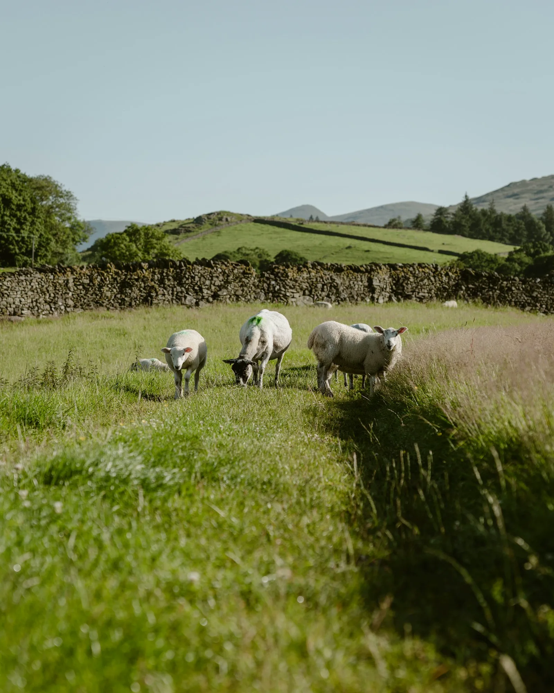
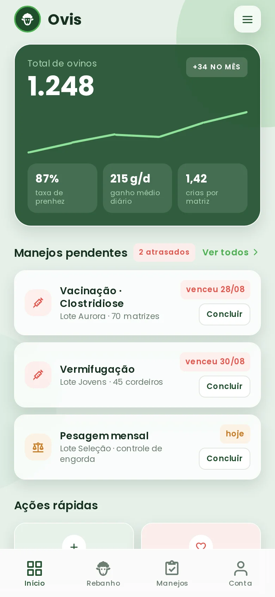
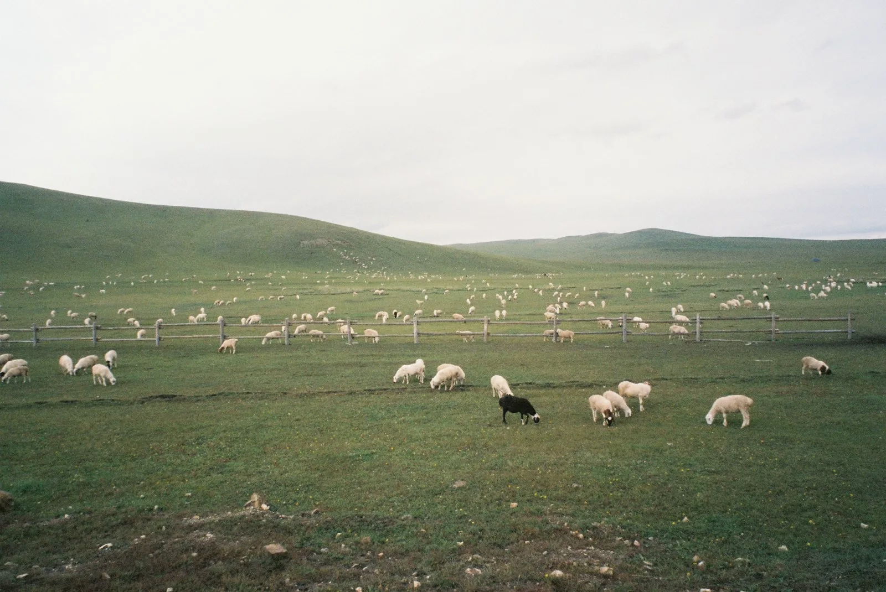
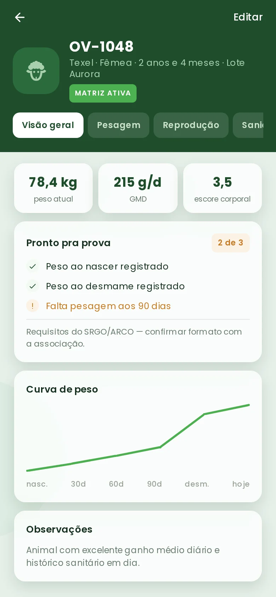

Pesagem
Pesou, anotou. O Ovis calcula sozinho quanto cada animal e cada lote engordou por dia, sem conta no papel.

*e não apaga. Tudo anotado na hora, no celular.

O quadro branco apaga. O caderno molha, rasga e fica no bolso de alguém. E na hora de saber se o lote já tomou vermífugo, ninguém tem certeza. Com o Ovis, anotou no celular, ficou guardado.
Quantos animais vocês têm, quantas ovelhas emprenharam, quanto os cordeiros engordaram por dia. O Ovis faz as contas a partir do que é anotado no campo. Logo abaixo aparecem os manejos que estão vencendo, e um toque marca como feito.
Números de demonstração do aplicativo.

Ficha do animal


Brinco, raça, idade e lote no topo. Logo abaixo, o peso de hoje, quanto ele engordou por dia (o GMD) e o escore corporal, a nota que mostra se o animal está magro ou gordo. Pesagens, reprodução e vacinas ficam guardadas na ficha, com data, a um toque.
Manejos
Vacina, vermífugo e pesagem aparecem separados por lote. O que passou da data fica em vermelho, o que é pra hoje fica em destaque. Fez? Toque em concluir e fica registrado, com a data.
Exemplo interativo com dados de demonstração.
Pesou, anotou. O Ovis calcula sozinho quanto cada animal e cada lote engordou por dia, sem conta no papel.
Veja quantas matrizes emprenharam e quantos cordeiros cada uma deu. Fica fácil decidir quem continua no plantel.
Ficam guardados na ficha de cada animal e lembrados por lote, pra ninguém passar da data.
Veja, animal por animal, quais pesagens ainda faltam para o registro genealógico, antes de perder o prazo.
Os mesmos dados do celular aparecem no computador, com os lotes organizados num mapa da propriedade. Peça uma demonstração e a gente te mostra.
Planos
comece com
14 dias grátis
sem cartão, sem pagar nada
Use o Ovis com o seu rebanho por 14 dias sem pagar nada. O teste começa no Plus mensal.
Sem cartão. A gente combina pelo WhatsApp.
a partir de
R$ 309,90 / mês
cobrado todo mês
Para levar a organização do rebanho à rotina da fazenda.
14 dias grátis. Preço combinado pelo tamanho do rebanho.
a partir de
R$ 359,90 / mês
cobrado todo mês
Para operações que querem evoluir o acompanhamento do rebanho.
14 dias grátis. Preço combinado pelo tamanho do rebanho.
Todos os planos começam com 14 dias grátis, sem cartão. Você preenche o formulário, fala com a gente pelo WhatsApp e a gente libera o acesso. No anual, o total equivale a 12 mensalidades com 15% de desconto. “A partir de” é o valor de entrada: o preço final depende do tamanho do rebanho e é confirmado na conversa.
Dúvidas
Não. Quem usa o celular pra mandar mensagem consegue anotar no Ovis. As telas mostram só o que importa no dia: o que venceu, o que é pra hoje e a ficha de cada animal.
Você preenche o formulário e fala com a gente pelo WhatsApp. A gente libera o acesso e você usa o Ovis com o seu rebanho por 14 dias, sem cartão e sem pagar nada. No fim, se fizer sentido, combinamos o plano.
No anual você paga uma vez por ano o equivalente a 12 mensalidades com 15% de desconto: R$ 3.160,98 no Plus e R$ 3.670,98 no Pro, também depois dos 14 dias grátis.
A composição detalhada dos planos é apresentada na contratação. Não atribuímos recursos ou limites a um plano sem confirmação.
Sim, por enquanto o Ovis salva os registros com o celular conectado. Onde não pega sinal, anote assim que voltar à área com internet.
Fale com a gente pelo WhatsApp (51) 98493-1844 ou pelo e-mail ovisfinanceiro@gmail.com. Durante o teste não há cobrança nenhuma.
A forma de pagamento é combinada na conversa pelo WhatsApp, depois do teste. Nada é cobrado pelo site.
Não. As telas mostradas aqui usam dados simulados.
Do pasto pro celular, na hora. Teste 14 dias sem pagar nada.
Testar 14 dias grátis